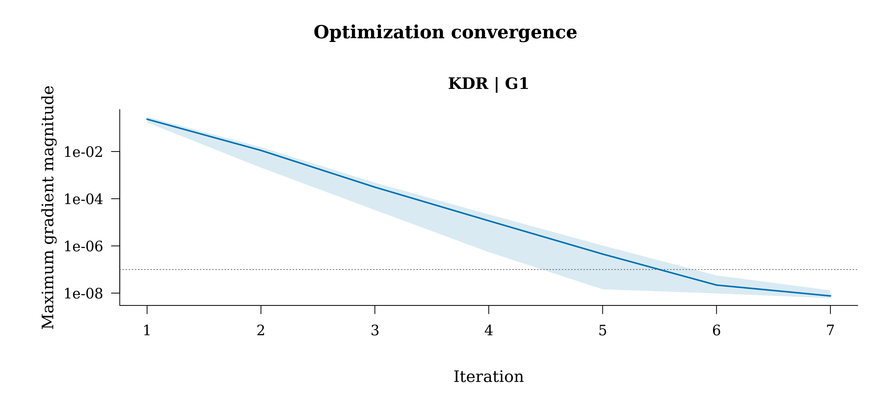
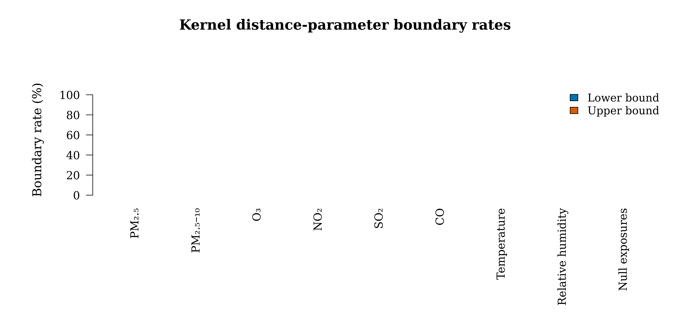

The line is the median gradient magnitude at each recorded iteration; shading is the 10th to 90th percentile range among fits reaching that iteration. The horizontal line is the stopping gradient tolerance. Different objective functions are shown in separate panels.

Rates summarize unique fitted kernels. The null-exposure bar pools all null-variable parameters. These numerical diagnostics describe fitted smoothness and are separate from the variable significance tests.
Positive distance parameters control Gaussian kernel smoothness. Bound indicators use a 1e-6 tolerance on the log scale. Null variables have their own distance parameters.
Each independent kernel initialization reports its objective, projected gradient, optimizer status and bound hits. Shared kernels appear once rather than once per nuisance scenario.
One row per planned fit. Point convergence, interval availability, interpretation availability and recorded errors are separate fields. Penalized convergence is assessed by the objective gradient and scaled step; the unpenalized equation residual is reported alongside it.